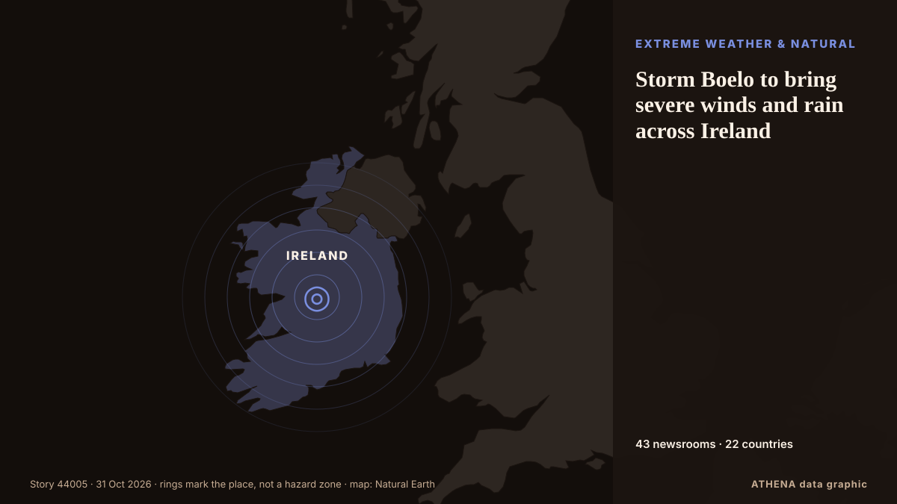

Storm Boelo to bring severe winds and rain across Ireland

Storm Boelo is forecast to bring severe wind and rain to the south, southwest and north today, with Status Orange weather alerts in place for a number of counties. من RTÉ News
نشرته بشكل مستقل 43 مصدرًا في 22 دولة منذ 20 أكتوبر، وأول من نشره Arabian Business؛ والتغطية تتراجع. يقدّر ATHENA الخطر بأنه مرتفع (6.2/10)، ويعود ذلك أساسًا إلى خطورة الضرر الموصوف ونطاقه الجغرافي والقطاعي. الثقة 87٪ (مرتفعة)، وعدد المصادر المستقلة المؤكِّدة: 43، بمتوسط موثوقية للمصادر يبلغ 71٪. وسائل الإعلام حسب البلد: المملكة المتحدة (12), الإمارات العربية المتحدة (5), أيرلندا (4). التغطية: من 20 أكتوبر إلى 28 أكتوبر، 193 ساعة.
لماذا يهم: تؤثر تطورات الطاقة والموارد في أسعار الوقود والكهرباء وأمن الإمدادات والالتزامات المناخية.
ما الذي تغيّر: تقرير جديد واحد خلال 24 ساعة حتى 31 أكتوبر.
العنوان الأول: Five counties under Orange warning during Storm Boelo
تُعرض العناوين بالإنجليزية كما نُشرت.
نظرة سريعة
اختير وقُيِّم وكُتب وفق منهجية ATHENA المنشورة. لا يتدخل أي محرر في الأحداث بعينها. كيف يُنتَج ›
| 20 Oct 08:26 UTC | 1 |
|---|---|
| 20 Oct 20:26 UTC | 1 |
| 21 Oct 08:26 UTC | 0 |
| 21 Oct 20:26 UTC | 0 |
| 22 Oct 08:26 UTC | 1 |
| 22 Oct 20:26 UTC | 0 |
| 23 Oct 08:26 UTC | 0 |
| 23 Oct 20:26 UTC | 3 |
| 24 Oct 08:26 UTC | 1 |
| 24 Oct 20:26 UTC | 0 |
| 25 Oct 08:26 UTC | 3 |
| 25 Oct 20:26 UTC | 1 |
| 26 Oct 08:26 UTC | 5 |
| 26 Oct 20:26 UTC | 9 |
| 27 Oct 08:26 UTC | 10 |
| 27 Oct 20:26 UTC | 7 |
| 28 Oct 08:26 UTC | 18 |
| 28 Oct 20:26 UTC | 11 |
| 29 Oct 08:26 UTC | 5 |
| 29 Oct 20:26 UTC | 0 |
| 30 Oct 08:26 UTC | 0 |
| 30 Oct 20:26 UTC | 0 |
| 31 Oct 08:26 UTC | 1 |
| 28 Oct 16:42 UTC | 6.0 |
|---|---|
| 30 Oct 09:36 UTC | 6.1 |
| 31 Oct 16:55 UTC | 6.2 |
لماذا هذه الأرقام
الأهمية
الخطر
الثقة
التغطية — من نشر الخبر ومتى
العنوان كما نُشر · يفتح الأصل- Arabian Business · الإمارات العربية المتحدةUAE weather: Rain and colder temperatures forecast this week
- Arabian Business · الإمارات العربية المتحدةUAE weather: Forecasters predict where rain will fall hardest this week amid thunderstorm warning
- Arabian Business · الإمارات العربية المتحدةDubai prepares for UAE rain forecast with 675 emergency staff and 1,100 machines
- RTÉ News · أيرلنداFive counties under Orange warning during Storm Boelo
- Arabian Business · الإمارات العربية المتحدةUAE launch new platform as it targets $65bn in foreign investment by 2031
- The Irish News (Belfast) · المملكة المتحدةStorm Boelo: Thousands of homes without power and traffic disruption as high winds batter Northern Ireland
- Keep Talking Greece · اليونانGreece Weather Warning: Heavy rainfalls and thunderstorms
- IOL · جنوب أفريقياDozens of flights cancelled at Amsterdam airport due to strong winds
- The Local Sweden · السويدToday in Sweden: A roundup of the latest news on Monday
- The Irish News (Belfast) · المملكة المتحدةNew Northern Ireland weather warnings issued for high winds
- Evening Standard (London) · المملكة المتحدةEfforts continue to restore power after Storm Boelo amid further wind warnings
- Nation.Cymru · المملكة المتحدةThree flood warnings in Wales as further rain and strong winds approach
- The Portugal News · البرتغالAlgarve wind farm shows how to protect migrating birds
- Newsroom Panama · بنماHigh Waves and Winds in the Panamanian Pacific Until October 31. A Warning Issued By SINAPROC.
- The Herald (Scotland) · المملكة المتحدةStorm-hit Scots demand answers as flood damage sparks 'serious questions'
- TheJournal.ie · أيرلندا'It wasn't a voluntary emigration': Patsy O'Sullivan was part of a generation who fled Ireland
- Manchester Evening News · المملكة المتحدةThe 10 'act now' flood warnings still in force across the North West tonight
- Free Malaysia Today · ماليزياMalaysia’s Manjari makes her numbers count in Ireland
- Malay Mail · ماليزياHeavy rain, high tides put Pulau Perhentian villagers on alert as monsoon season begins
- to vima · اليونانBad Weather to Persist in Greece Through Wednesday
- Mainichi (English) · اليابانSiemens to set up regional base for wind turbine maintenance in Hokkaido
- Daily Mirror · سريلانكاSevere lightning advisory issued for Ampara and Batticaloa
- The Herald (Scotland) · المملكة المتحدةRail route disrupted after high winds hit vital bridge
- The Herald (Scotland) · المملكة المتحدةHigh winds bring disruption to road, rail and ferries as flooding risk rises
- RTÉ News · أيرلنداNo single answer to geo-blocking TV content in NI - Ofcom
- Arabian Business · الإمارات العربية المتحدةUAE weather: Rain forecast until Friday
- The Hindu · الهندRivers in north Andhra under watch amid cyclone-triggered rains
- OC Media · جورجياInstallation of six wind turbines completed at Vento Energy’s 43.2 MW Breti Wind Power Project
- The Herald (Scotland) · المملكة المتحدةHistoric golf club submerged after Storm Boelo as damage 'difficult to imagine'
- Phys.org · المملكة المتحدةScientists reveal the staggering number of bat deaths at wind turbines
- The Rio Times · البرازيلPeru Red Rain Alert as River Hits 30 Homes
- Belfast Telegraph · المملكة المتحدةNature recovery plan launched amid Northern Ireland biodiversity decline
- The Irish News (Belfast) · المملكة المتحدةNature recovery plan launched amid Northern Ireland biodiversity decline
- The Island · سريلانكاSeveral spells of showers will occur in the Western, Sabaragamuwa provinces and in Kandy, Nuwara-Eliya, Galle and Matara districts
- China Daily — page reader · الصينEU's marine biodiversity plans face challenges
- Cyprus Mail · قبرصThunderstorms, hail and gale force winds batter Cyprus as low barometric engulfs island
- Daily Mirror · سريلانكاLightning alert for Eastern areas
- Irish Independent · أيرلنداBank of Ireland raises income forecast as lending grows by €3.6bn
- Cyprus Mail · قبرصStorms cause power outages in Larnaca and Limassol
- Hindustan Times · الهندThree killed by storm in southern India